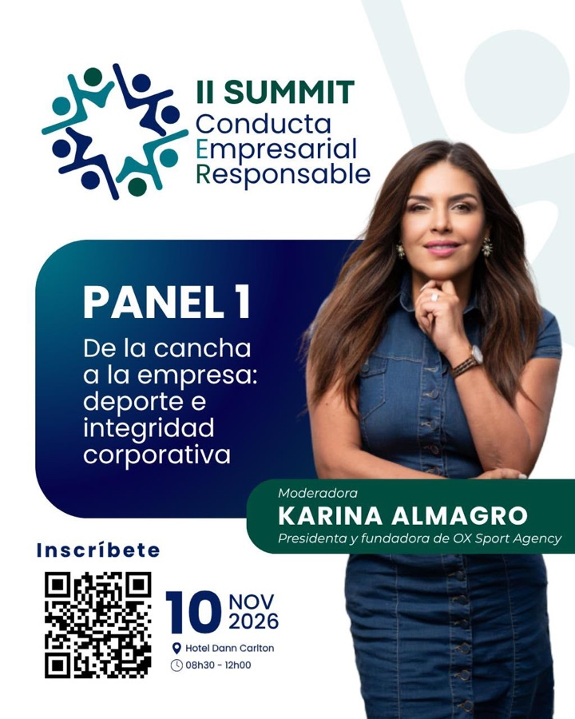

Guía para Ricardo Bernal: cobertura en video de la participación de Karina Almagro, presidenta y fundadora de OX Sport Agency, como moderadora del Panel 1 del II Summit de Conducta Empresarial Responsable.

Un solo objetivo: material en bruto suficiente para que otro equipo edite un video resumen de la participación de Karina en el Summit. El corazón es su moderación de 25 minutos en el Panel 1, más una entrevista corta al final y B-roll que muestre un evento lleno, con nivel, y a Karina como protagonista.
Toca cada bloque para ver qué grabar en ese momento. La hora exacta del Panel 1 la confirmamos con la organización al llegar; el evento completo va de 08h30 a 12h00, pero nuestra cobertura termina a las 10h00.
De aquí salen los clips del video resumen. Queremos muchas frases completas de Karina para poder cortar entre ideas.
Este material acompaña las respuestas de la entrevista y la moderación. Queremos mostrar un evento lleno, de nivel, y a Karina como protagonista. Marca cada toma a medida que la grabes (se guarda en este dispositivo).
Al terminar el panel. Ricardo hace las preguntas. Karina mira a Ricardo, no a la cámara.
¿Cómo viviste la experiencia del día de hoy en el Summit?
Para abrir la entrevista y que se suelte.
¿Qué crees que hace falta para que un proyecto deportivo pase a tener oportunidades comerciales?
Conecta con el tema del panel: de la cancha a la empresa.
¿Cuál es el futuro que ves necesario para el deporte ecuatoriano y su vínculo con el sector corporativo y empresarial?
La pregunta de cierre, la más inspiradora.
Pedirle a Karina que incluya la pregunta en su respuesta (“Lo que hace falta para…”), porque la voz de Ricardo no va a salir en el video.
Plano medio, Karina un poco hacia un lado, mirando hacia el otro lado del cuadro. Logos del Summit o el salón desenfocado de fondo.
Micrófono corbatero en Karina. Lugar sin ruido de fondo. Dejar unos segundos de silencio al final de cada respuesta.
Después de terminada la producción. Si cerramos a las 10h00 del 10 de noviembre, el material tiene que estar en la carpeta a más tardar el jueves 12 de noviembre de 2026 a las 10h00.